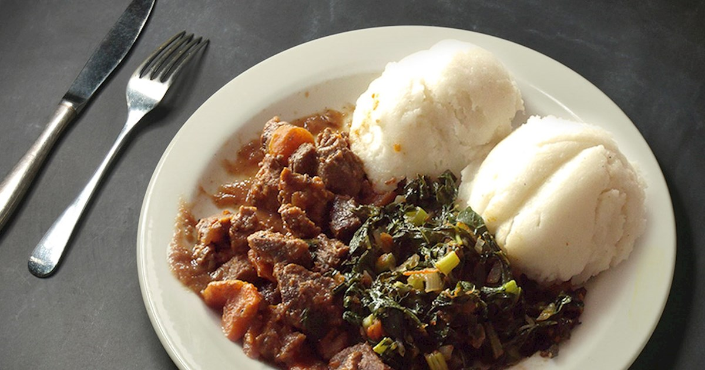

Ugali Recipe

Desription
Ugali is the staple food in most African countries along the Eastern coast. In the west, most people call it 'Corn meal'. Of all the dishes in my list, Ugali is the easiest to prepare and has the least ingredients. Seriously, it only has two ingredients!
Ingredients
- I cup of maize(corn) flour
- 2 cups of water
Steps
- Heat water over medium heat in a deep pan. Make sure you take a pan with a handle
- Sprinkle about 1 tbsp of the maize meal while the water comes to a boil
- Add the maize meal or cornmeal and keep on stirring with a strong wooden spoon
- Keep stirring and pressing the mixture against the sides of the pan to break up the lumps
- As the mixture becomes thicker, it becomes more difficult to mix but keep mixing and breaking up the lumps
- The mixture with begin to come away from the sides of the pan
- Allow it to cook for 2-3 minutes
- At this point either transfer the ugali to a platter from the pan. Place the plate over the pan and turn it upside down.
- Or you can transfer to a small heatproof bowl. Pat it down into shape. Place a plate over the bowl and turn it over.
- Enjoy piping hot ugali with your favourite stew or curry.
Ugali can be served with any kind of stew. From beef, to chicken and even vegetables. Whatever makes it tastier, use it.